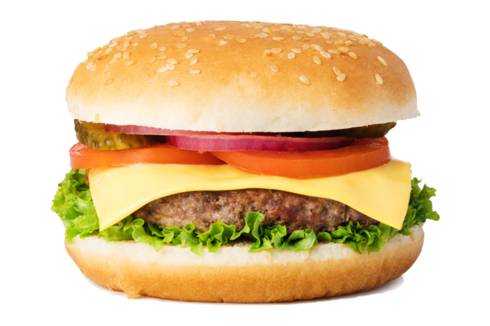

Burger

Description
The burger is an excellent source of grain and meat. It is also customizable in nature; ingredients from the other food group can also be seamlessly incorporated into the burger's design. This recipe is a go-to for casual backyard festivities. Unfestive consumption is also acceptable.
Ingredients
- Generic Brand™ Burger Bun
- Generic Brand™ Burger Patty
- Generic Brand™ Red Sauce
- Generic Brand™ Yellow Sauce
- Cheese (Optional)
- Lettuce (Optional)
- Tomato (Optional)
- Pickles (Optional)
- Onion (Optional)
Preparation
- Open the Generic Brand™ Burger Bun so that its inside faces are facing up.
- Cook the Generic Brand™ Burger Patty to preference using a heating instrument such as a grill, microwave, or Generic Brand™ Patty Cooker.
- Layer food ingredients, including the now cooked Generic Brand™ Burger Patty, atop the bottom bun. Order to preference.
- Apply Generic Brand™ Sauces to top bun.
- Place top bun to complete the burger.
Your burger is now ready for consumption.
Back to Home